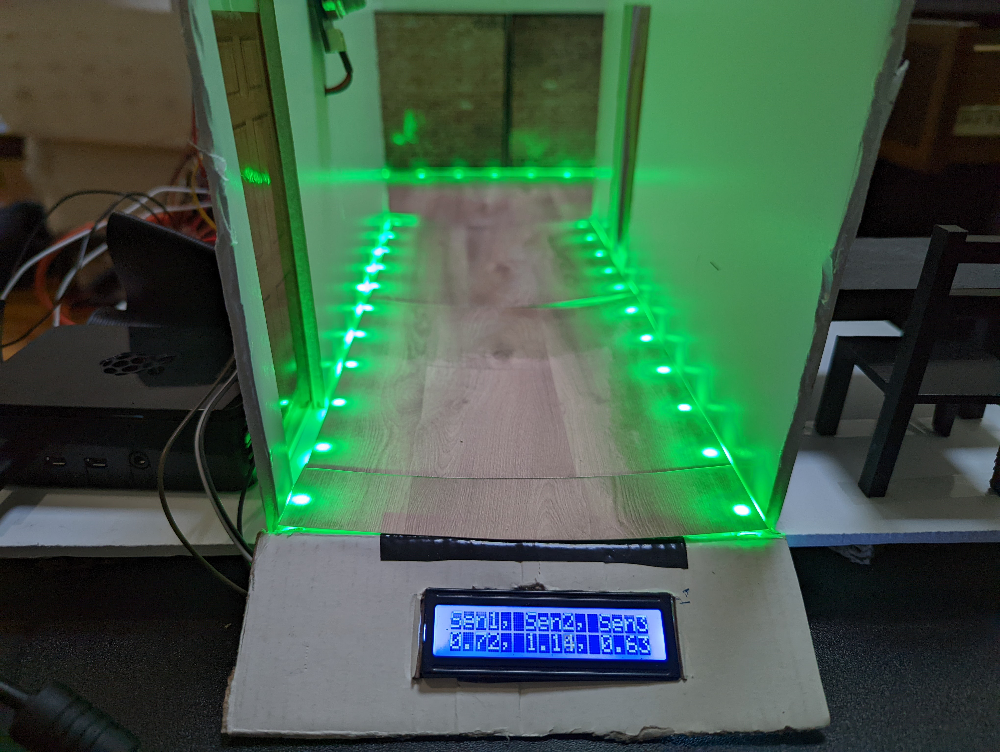

1 / 3
Caption One
2 / 3

Caption Two
3 / 3

Caption Three
An integral component to public safety is reliable and effective emergency safety system. The most common type of public emergency safety system installed in every commercial and private building is, of course, a fire alarm system. We wanted to iterate on the concept of a simple fire alarm system and see if we could make it "smart", and this led us to exploring the idea of other kinds of "smart" security and alarm systems, primarily ones focuses on natural hazard detection and alerting (i.e. fire, water, air). We decided to focus on fire since it is one of the more common & dangerous emergencies that occurs inside buildings. We wanted to create something meant to supplement current fire safety infrastructure already installed, but not replace it.
Our idea for our flagship product is called the Breezy. It is a smart fire alarm system powered by raspberry pi microcontrollers and some sensors. We made a small scale model to demonstrate the concept. Essentially, we connect smoke sensors to the Raspberry Pi and install them in each hallway of of building. The the Raspberry Pi collects data and will trigger an alarm when sensors meet a certain threshold. In application, the Pi's can also be rigged up to a sprinkler system, and the Pi could also send sensor data to a server and distribute it accordingly to first responders.
POE stands for "power over ethernet". It is a collection of standards for transmitting power using twisted-pair ethernet cabling. This allows for both data and power transmission via one cable! POE technology is foundational to our project and the projects of previous teams in this IPRO.
One very popular and useful implementations of POE technology is in POE powered lighting. POE lights are not only more energy efficient, they are able to be remotely controlled because they are connected to a network. The previous IPRO class (Fall 2019) used Hubbell's PowerHUBB nodes and set up a smart lighting system in the smart tech lab at IIT.
Image from Hubbell
The Hubbell nodes allow for some very cool control and automation to a building's existing lighting solution. Motion sensors can be connected
to automatically turn on lights when someone enters a room, and automatically turn off when no motion is detected for 30 minutes, for example.
Lights can be set on a schedule to turn off automatically at a certain time. Lights can be grouped together and controlled independently, and
each light's usage statistics are tracked for the user to analyze. This allows for a level of fine-tuned control that is simply not possible with
traditional lighting solutions.
The 2019 Spring semester provides a
quick guide
on how to set up the Hubbell PowerHUBB nodes and also provides some download links to the software they used. Unfortunately, we could not manage to
get the software setup and working on our own computers, and had issues with the software pre-installed on the Intel mini-PC on campus once we had access to it.
We were, however, able to use the nodes that powered the ceiling lights and see how the software works a little bit. We were able to determine that the PowerHUBB nodes, while
powerful and very useful for the application of POE lighting, were not as sophisticated as we had thought and thus we decided to use a Raspberry Pi (which could be replaced
by any similarly capable microcontroller) to control individually addressable RGB lights.